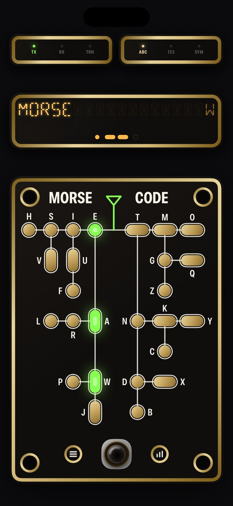
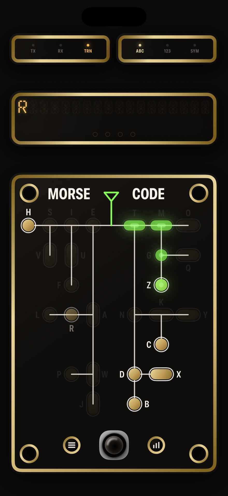
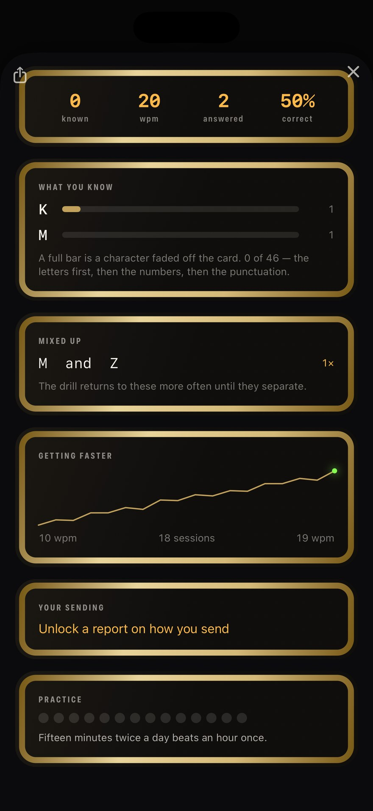

iPhone과 iPad용
익힐수록 표가 사라집니다
모스 앱은 모두 읽으라고 표를 줍니다. MorseHero는 그 표를 도로 가져가는 앱입니다.



카드가 부호를 가르칩니다
모스는 트리이고, 글자를 읽는다는 것은 그 트리를 따라 걷는 일입니다 — 단점이면 왼쪽, 장점이면 오른쪽. 카드는 어두운 기판 위에 금색 패드로 그린 그 트리이며, 패드마다 램프가 하나씩 들어 있습니다. 단점 장점 단점을 치면 E, 다음 A, 다음 R이 차례로 켜집니다. 답을 건네받는 대신, 부호가 답으로 좁혀지는 과정을 보게 됩니다.
찾아보기가 아니라 경로
지나온 램프가 모두 켜진 채로 남아, 글자는 왜 그 글자였는지와 함께 도착합니다.
검은 전건 하나
누르는 길이가 신호의 전부이므로, 제스처 인식기가 아니라 하드웨어 시계로 측정합니다.
세 가지 카드
문자는 트리로. 숫자와 문장부호는 표로, 한 글자에 한 줄씩. 그 부호들에는 트리가 흩어 놓는 규칙이 있기 때문입니다.
그리고 표는 스스로 지워집니다
점과 선의 표로 모스를 배우는 것이야말로 대부분의 사람을 분당 12단어쯤에서 멈추게 하는 실수입니다. 그래서 어떤 글자를 알아듣게 되면 그 패드는 기판에서 사라집니다 — 수신 중일 때만, 송신 중에는 절대 사라지지 않습니다. 익힌 자리부터 기판이 어두워지고, 비어 가는 카드가 곧 진도입니다. 한동안 놓치면 그 글자는 다시 돌아옵니다.
무료 범위는 카드 전체, 송신과 수신 양방향, 실시간 해독, 그리고 과정의 첫 여덟 글자입니다. 그 글자들이 사라지는 것을 지켜보고 이 방식이 자신에게 맞는지 판단하기에 충분합니다. 한 번의 결제로 나머지가 열립니다. 갱신되지 않고 해지할 것도 없습니다.
연습하는 세 가지 방법
직접 치기
검은 전건으로 송신하고 안테나에서 아래로 경로가 켜지는 것을 봅니다.
무전기에 대기
마이크로 들리는 것을 해독하면서 보내는 쪽의 속도까지 스스로 알아냅니다.
앱에 답하기
한 글자는 되쳐 보냅니다. 단어, 호출부호, 교신 전체는 입력합니다 — 문장을 되쳐 보내면 자기 송신 속도가 상한이 됩니다.
당신이 듣지 못하는 것을 듣습니다
전건은 하드웨어 시계로 측정되므로, 장점이 정말 단점의 세 배인지, 간격이 유지되는지, 지치면서 흔들리는지를 앱이 볼 수 있습니다. 옆에 앉은 숙련된 통신사가 그러듯, 고칠 것을 하나만 짚어 줍니다.
방식은 진짜입니다
코흐와 판스워스를 제대로. 글자는 언제나 전속으로 보내므로, 나중에 느린 소리를 다시 배울 일이 없습니다. 처음에는 글자 사이를 넓게 띄우고, 따라올수록 그 간격이 저절로 좁아집니다. 새 글자는 이미 나와 있는 글자를 모두 잡아낼 때에만 추가됩니다. 속도는 제안될 뿐 강요되지 않으며, 하루 십오 분씩 두 번이 한 시간을 몰아서 하는 것보다 낫습니다.
가장 먼저 묻는 것들
모스 부호를 익히는 데 얼마나 걸리나요?
쓸 만한 속도로 받아 적는 사람들 대부분은 하루 십오 분씩 두 번으로 두세 달이 걸렸습니다. 앱은 그 분량에 맞춰 만들어졌고 그 이상을 요구하지 않습니다.
무전기가 필요한가요?
아닙니다. 앱이 스스로 보내고 채점하고 보고합니다. 무전기가 있다면 향해 두세요. 그것도 해독합니다.
전에 해 보다가 그만뒀습니다.
그만두는 사람은 거의 모두 표를 읽다가 그만둡니다. 이 앱은 바로 그 습관을 가져가려고 만들어졌습니다.
구독이 있나요?
없습니다. 한 번의 결제, 계정도 갱신도 없습니다. 무료인 것은 계속 무료입니다.
신호가 없어도 되나요?
전혀 문제없습니다. 앱은 스스로 어떤 네트워크 요청도 하지 않습니다. 비행기에서도 지하에서도.
카메라 라이트를 깜빡이게 할 수 있나요?
예, 소리와 진동과 함께 깜빡입니다. 배와 배 사이에서 모스를 주고받던 방식이고, 방 건너편 사람이 당신을 읽을 수 있는 방식입니다.
어떤 것도 기기를 떠나지 않습니다
계정 없음. 분석 없음. 네트워크 없음. 앱은 스스로 어떤 요청도 보내지 않으며, 대화하는 서버는 Apple의 것뿐이고 그것도 구입하거나 복원할 때뿐입니다. 마이크는 신호음이 있는지 측정한 뒤 버려지고 결코 녹음되지 않습니다. 개인정보 처리방침에 무엇이 어디에 남는지 정확히 적혀 있습니다.
앱은 열한 개 언어를 지원합니다. 영어, 독일어, 프랑스어, 스페인어, 이탈리아어, 브라질 포르투갈어, 일본어, 한국어, 그리스어, 우크라이나어, 러시아어.
MorseHero
무료로 사용해 보고, 한 번의 구입으로 잠금 해제. iPhone과 iPad, 열한 개 언어, 업로드는 없습니다.